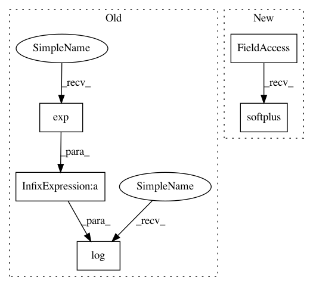

a3fe8bdf1c484e390dfe3947cc395372c0187589,tensorforce/core/distributions/beta.py,Beta,tf_parametrize,#Beta#Any#,50
Before Change
beta = self.beta.apply(x=x)
beta = tf.clip_by_value(t=beta, clip_value_min=log_eps, clip_value_max=-log_eps)
beta = tf.log(x=(tf.exp(x=beta) + 1.0)) + 1.0
shape = (-1,) + self.action_spec["shape"]
alpha = tf.reshape(tensor=alpha, shape=shape)
After Change
beta = self.beta.apply(x=x)
// epsilon < 1.0, hence negative
beta = tf.clip_by_value(t=beta, clip_value_min=log_epsilon, clip_value_max=-log_epsilon)
beta = tf.math.softplus(features=beta) + one
beta = tf.reshape(tensor=beta, shape=shape)
// Alpha + Beta
In pattern: SUPERPATTERN
Frequency: 3
Non-data size: 5
Instances
Project Name: reinforceio/tensorforce
Commit Name: a3fe8bdf1c484e390dfe3947cc395372c0187589
Time: 2019-02-06
Author: alexkuhnle@t-online.de
File Name: tensorforce/core/distributions/beta.py
Class Name: Beta
Method Name: tf_parametrize
Project Name: reinforceio/tensorforce
Commit Name: a3fe8bdf1c484e390dfe3947cc395372c0187589
Time: 2019-02-06
Author: alexkuhnle@t-online.de
File Name: tensorforce/core/distributions/beta.py
Class Name: Beta
Method Name: tf_parametrize
Project Name: GPflow/GPflow
Commit Name: b9b4ed7c23d0a39802d4571a65f0bf44c443d0fd
Time: 2017-10-03
Author: james@prowler.io
File Name: gpflow/transforms.py
Class Name: Log1pe
Method Name: log_jacobian_tensor
Project Name: GPflow/GPflow
Commit Name: 7172bd3497ed97f67a35c85d03675f7abc907044
Time: 2016-07-10
Author: james.hensman@gmail.com
File Name: GPflow/transforms.py
Class Name: Log1pe
Method Name: tf_forward